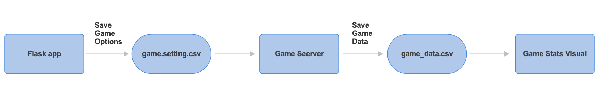
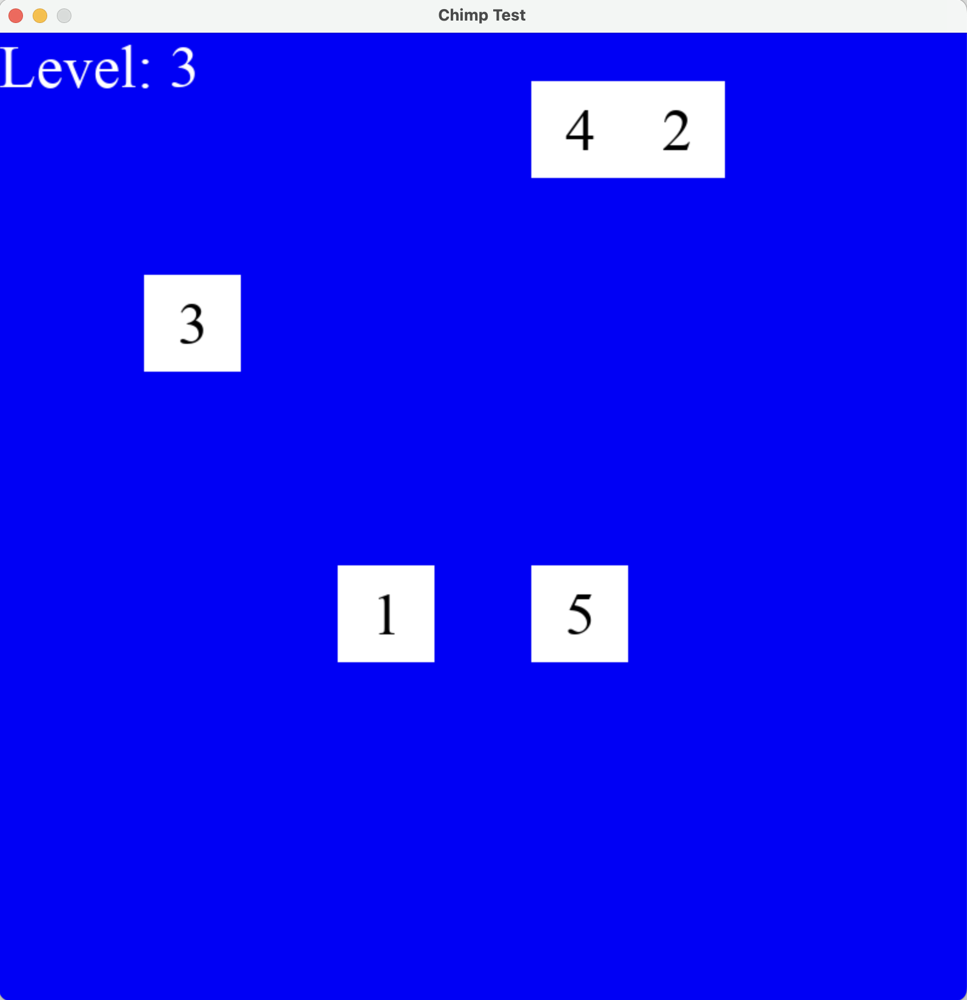
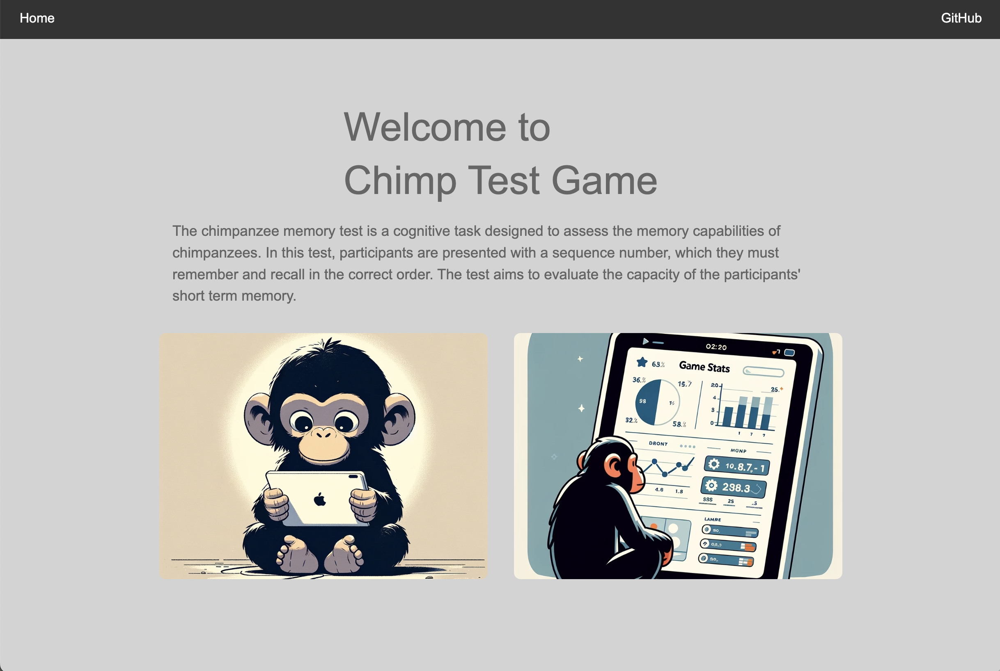
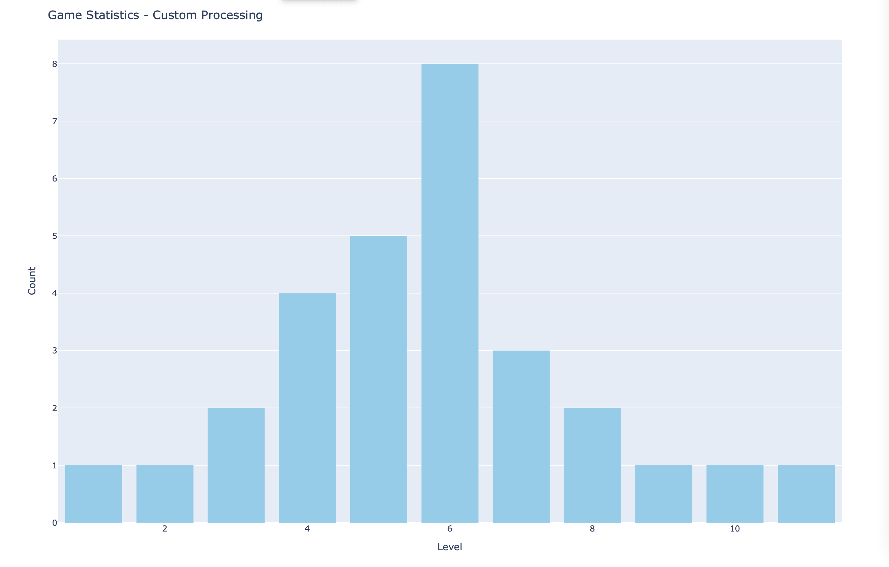

Chimp Test Game
Link to our group github repository : https://github.com/Coding-Tom-1405/PIC16B-Group-Project
Overview
The project is about making a memory game that measures people’s short-term memory and helps remembering things better. The game provides users with randomly arranged numbers. After a certain amount of time, the numbers disappear, then users have to remember where each number was and click boxes in the correct order. We made this game using Pygame that allows us to make cool games.
We didn’t just make the game. We also created a website where players could choose some potions of the game and see how well they were doing with visualization. For the website, we used Flask, which allows to create a website in Python. After players play the game, users can move to a stats page and see charts and statistics about the game. We used library called Plotly to make these charts.
Below is a simple flow chart how our projet works and data is handled.

First Component : Pygame
The pygame portion of your project serves as the core gameplay engine for the memory game. This game, inspired by the “chimp test,” challenges players to remember and select squares in the order of their numbers, which are initially displayed and then hidden.
The difficulty adjustment and going to the next level are one of the main features of the game. The difficulty affects the number of squares that appear as the player progresses, making the game even more difficult. This adjustment is made possible through the difficulty variable, which is read from a csv file and affects the number of squares that are generated at each new level.
# Taking into account user's difficulty and/or challenge chosen
with open("game_setting.csv", 'r') as file:
last_line = file.readlines()[-1] # Accessing the last entry row
difficulty = int(last_line.split(',')[0])
# Taking the 1st integer variable as difficulty
if last_line.split(',')[1] == 'timer\n' : # Checking if 2nd element says timer chosen
timer_chosen = 1
else :
timer_chosen = 0
# Winning Condition and Level Progression
if len(num_list) == len(square_group): # Checking if all squares were clicked
win = num_list == [str(squares.number) for squares in square_group] # Setting win condition
if win:
reset_coord()
num_list = []
for i in range(difficulty): # Adding number of squares equal to difficulty chosen
square_group.add(Square(len(square_group) + 1, make_square=False)) The latter part of the code explains about the winning condition, This section checks if the player has clicked all the squares (len(num_list) == len(square_group)), num_list tracks the squares the player has clicked in order.
The win condition checks if the sequence of squares clicked by the player (num_list) matches the intended sequence, which is determined by the order of numbers assigned to each square in square_group.
When the win condition meets, the game resets the coordinates for the squares (reset_coord()), clears the num_list, and adds new squares according to the difficulty level. The number of squares increases depending on the level of difficulty chosen.

This is what the game window looks like. When the game is playing, the background color is blue. When you got correct, the background color changes to green and then move to next level. However when you got wrong, the backgroud changes to red and if you got wrong for 3 times, then it will show you the message “Game Over.”
Second Component : Flask App
The second component of the project is the development of a dynamic website. This is where users can select the options and view their game stats. Therefore we can say this is where integration of all the three components take place. However, what we initially planned to do was to integrate those three components to this website using tool called pygbag, which allows to play the gam on the web. We successfully embeded the game into web, however, it could not deal with saving the game data to csv file, so we were not able to create a plot for the game data. Therefore, we had to seperate those into three parts. Even though the gaming process got little complicated, the game worked well.
def write_to_csv(level, challenge):
"""
Save the selected game level and timer option to a CSV file.
"""
with open('game_setting.csv', 'a', newline='') as file:
writer = csv.writer(file)
writer.writerow([level, challenge])
@app.route("/select", methods=['GET', 'POST'])
def select():
"""
Get and store the game level and challenge options.
"""
if request.method == 'POST':
selected_level = request.form.get("level")
selected_challenge = request.form.get("challenge")
write_to_csv(selected_level, selected_challenge)
return redirect('/confirm')
return render_template('select.html')
<form id="selectionForm" action="/select" method="post"> <!-- Form for submitting game selection options, posts data to /select -->
<div class="main center">
<div class="box">
<h2>Select Level</h2> <!-- Section game level -->
<ul>
<input type="radio" name="level" value="1"> Level 1<br>
<input type="radio" name="level" value="2"> Level 2<br>
<input type="radio" name="level" value="3"> Level 3<br>
</ul>
</div>
<div class="box">
<h2>Challenges</h2> <!-- Section game challenges -->
<ul>
<input type="radio" name="challenge" value="timer"> Timer<br>
<input type="radio" name="challenge" value="none"> None<br>
</ul>
</div>
<div class="input-and-button-container"> <!-- Container for the submit button -->
<div class="start-button-container">
<button type="submit" class="btn">Confirm</button>
</div>
</div>
</div>
</form>Selection Page (“/select”): Accessible through a POST and GET request, this route allows users to select the game level and timer option. The selections are captured from a form submission and stored, possibly in a CSV file for persistence across sessions. After making their selections, users are redirected to a confirmation page.
The html code for the select page shows the straightforward and user-friendly design of the game selection interface. With a radio button type, we made it able to select only one selection, and made a button and linked it to the next page, so it allows to move to confirm page whenever users click the confirm button.

This is what the main page of the website looks like. The two images on the bottom works as menu buttons to go move to next pages.
Third Component : Data Visualization
The third component of the project focuses on integrating data visualization into the web application. It first read the game data from a CSV file, analyzing this data, and make insightful visualizations on a web page dedicated to game statistics. There are three plots for the game stats visualization:Histogram of Levels Reached, Average Time Spent per Level, and Success Rate per Level.
Histogram of Levels Reached shows the distribution of maximum levels reached by players.
Average Time Spent per Level shows the average time spent on correct versus incorrect attempts on each level
Success Rate per Level shows the percentage of successful attempts per level.
parsed_data = []
# Read the CSV file again to parse its content
with open(file_path, 'r') as file:
for line in file:
elements = line.strip().split(',')
# Process every three elements (assuming level, result, time_spent format)
for i in range(0, len(elements), 3):
try:
level = int(elements[i]) # Convert the first of every three elements to an integer
result = elements[i+1] # The second element is the result (e.g., win/lose)
time_spent = float(elements[i+2]) # The third element is time spent, converted to float
parsed_data.append([level, result, time_spent])
except ValueError:
print(f"Skipping malformed line: {line.strip()}")
# Create a DataFrame from the parsed data
df = pd.DataFrame(parsed_data, columns=['Level', 'Result', 'Time Spent'])
# Plot 2: Average Time Spent per Level for Correct vs Incorrect Attempts
# Calculates the average time spent per level and result.
avg_time_spent = df.groupby(['Level', 'Result'])['Time Spent'].mean().reset_index()
fig2 = go.Figure()
# Loops through each unique result (e.g., 'correct', 'incorrect') to add a bar for each level and result combination.
for result in avg_time_spent['Result'].unique():
df_filtered = avg_time_spent[avg_time_spent['Result'] == result]
# Adds a bar trace to the figure for each result with the average time spent per level.
fig2.add_trace(go.Bar(x=df_filtered['Level'], y=df_filtered['Time Spent'], name=result))
# Configures the layout of the plot, including the title, axis labels, and setting the bar mode to group for comparison.
fig2.update_layout(title_text='Average Time Spent per Level',
xaxis_title='Level',
yaxis_title='Average Time Spent (seconds)',
barmode='group')
fig2.show()
return render_template('stats.html')This shows the code for visializing the average time spent on correct versus incorrect attempts on each level. The parsed data is converted into a pandas DataFrame and it creates an interactive bar chart using Plotly. It calculates the average time spent per level and loops through each correct and incorrect.

This plot is how the Histogram of Levels Reached looks like.
How to Play
If you want to play the game , you should first need to download all the files in our github repository. Then go to command line, and navigate to where the folder you just downloaded is located at. And then type “flask run”.
Then it will show you the url like http://127… Go to this website and this will show you the main website for the game. After selecting the game options, go to the command line again and type “python main.py”.
Now the game will be launched with your selected game options. After finishing the game, if you wnat to view the game stats visualization, just click the Game Stats tab in the main homepage, then the plots will be shown.
Remarks
The project we prerformed created simple memory games and didn’t even collect special personal information, so we think that there is not much ethical issues. This game can help with memory, but it can be bad to play for a long time because it is still a game.